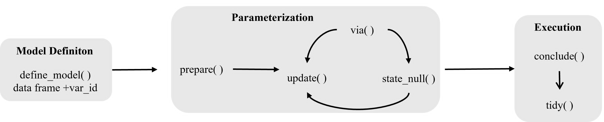

Introduction
The conventional R idiom for statistical inference is:
It is concise for a single test, but it does not compose. Each function is its own island: a different name, different argument conventions, no shared way to express what hypothesis you are testing or to switch between estimation methods without rewriting the call entirely.
statim keeps that familiar idiom as its entry point, while bringing declarative, pipe-friendly grammar (much in spirit of ggplot2 or dplyr). The same inference pipeline can express a classical test or a permutation test with nothing else touching.
A complete example
Before explaining each piece, here is what a statim pipeline looks like end to end:
-
t-test
sleep |> define_model(extra %by% group) |> prepare(T_TEST, .ci = 0.9) |> conclude() |> tidy()#> # A tibble: 1 × 7 #> group estimate t_stat df p_val lower_90 upper_90 #> <chr> <dbl> <dbl> <dbl> <dbl> <dbl> <dbl> #> 1 group -1.58 -1.86 17.8 0.0794 -3.05 -0.107 -
Linear regression
mtcars |> define_model(mpg ~ .) |> prepare(LINEAR_REG) |> conclude() |> tidy()#> # A tibble: 11 × 5 #> term estimate std_error statistic p_value #> <chr> <dbl> <dbl> <dbl> <dbl> #> 1 (Intercept) 12.3 18.7 0.657 0.518 #> 2 cyl -0.111 1.05 -0.107 0.916 #> 3 disp 0.0133 0.0179 0.747 0.463 #> 4 hp -0.0215 0.0218 -0.987 0.335 #> 5 drat 0.787 1.64 0.481 0.635 #> 6 wt -3.72 1.89 -1.96 0.0633 #> 7 qsec 0.821 0.731 1.12 0.274 #> 8 vs 0.318 2.10 0.151 0.881 #> 9 am 2.52 2.06 1.23 0.234 #> 10 gear 0.655 1.49 0.439 0.665 #> 11 carb -0.199 0.829 -0.241 0.812
Each step has one job. The pipeline reads like a sentence: define the model, choose the test, execute and read the output.
General Workflow

All you need to know is that the most usual usage of statim comes with three steps. Here’s the general anatomy of the main statim semantics:
# Data can be piped in or passed as argument to `define_model()`
... |> # Possible extensions
define_model(
<var_id>(var1, var2, ...),
data, ...
) |> # 1. Model definition
# ... |> # Possible extensions
prepare(<STAT_FN>) |> # 2. Prepare method (lazy)
via(...) |> # Optional: method variant (*)
state_null(<expr>) |> # Optional: null hypothesis (*)
# ... |> # Possible extensions
conclude() |> # 3. Execute
<output_handler>() # e.g. tidy(), display() i. Layout Model Definition
Every pipeline starts with define_model(), which binds a
variable description to data. The variable description is a
<var_id> object — statim’s equivalent
of ggplot2::aes(). It captures bare variable names lazily,
exactly as ~ does, but resolves them in a consistent,
pipeline-aware way.
The two most common <var_id> objects are:
-
x_by(x_group)/x %by% group: comparexacross levels ofgroup. -
rel(x, y): describe the relationship ofxtoy.
define_model(sleep, extra %by% group)
define_model(mtcars, mpg ~ .) # standard formula also acceptedFor a full account of all built-in <var_id>
objects and how to write your own, see the <var_id>
objects article.
ii. Choose the test
After the model is defined, prepare() attaches a
statistical method to the pipeline. Nothing is executed yet — the
pipeline is lazy until conclude() is called.
sleep |>
define_model(extra %by% group) |>
prepare(T_TEST) |>
# update() is optional
update(.ci = 0.9) prepare() accepts any STAT_FN —
T_TEST, LINEAR_REG, COR_TEST,
P_TEST, and so on. If you prefer to be explicit,
prepare_test() and prepare_model() are
available as typed alternatives.
Eager form
For a quick one-shot inference, every test exposes an eager form that collapses the pipeline into a single call:
#> -- Summary ---------------------------------------------------------------------
#>
#> ──────────────────────────────────────────
#> group estimate t_stat df p_val
#> ──────────────────────────────────────────
#> group -1.580 -1.861 17.780 0.079
#> ──────────────────────────────────────────
#>
#>
#> -- Confidence Interval ---------------------------------------------------------
#>
#> ─────────────────────────────
#> group lower_90 upper_90
#> ─────────────────────────────
#> group -3.053 -0.107
#> ─────────────────────────────
LINEAR_REG(mpg ~ ., mtcars)#> -- Coefficients ----------------------------------------------------------------
#>
#> ──────────────┬───────────────────────────────────────────
#> term │ estimate std_error statistic p_value
#> ──────────────┼───────────────────────────────────────────
#> (Intercept) │ 12.303 18.718 0.657 0.518
#> cyl │ -0.111 1.045 -0.107 0.916
#> disp │ 0.013 0.018 0.747 0.463
#> hp │ -0.021 0.022 -0.987 0.335
#> drat │ 0.787 1.635 0.481 0.635
#> wt │ -3.715 1.894 -1.961 0.063
#> qsec │ 0.821 0.731 1.123 0.274
#> vs │ 0.318 2.105 0.151 0.881
#> am │ 2.520 2.057 1.225 0.234
#> gear │ 0.655 1.493 0.439 0.665
#> carb │ -0.199 0.829 -0.241 0.812
#> ──────────────┴───────────────────────────────────────────
#>
#>
#> -- Model Fit -------------------------------------------------------------------#> Warning in system("tput cols", intern = TRUE): running command 'tput cols' had
#> status 2
#> ------------------------------------------------------
#> R Squared : 0.87 F-statistic : 13.93
#> Adj. R Squared : 0.81 df1 : 10
#> Sigma : 2.65 df2 : 21
#> n : 32 p-value : <0.001
#> df (residual) : 21 :
#> ------------------------------------------------------The eager form is equivalent to the full pipeline for simple cases.
Use the pipeline when you need via(),
state_null(), or tidy().
Switching the estimation method
via() recalibrates the estimation method in a lazy
pipeline. The model definition and test choice stay the same — only the
method changes. Switching from a classical t-test to a permutation test
is a single added line:
# Classical
sleep |>
define_model(x_by(extra, group)) |>
prepare_test(T_TEST) |>
conclude()#>
#> == Model =======================================================================
#>
#> Variable Mapper : x_by
#> Args : extra | group
#> x_vars : 1
#> by_vars : 1
#>
#> == T-Test ======================================================================
#>
#> -- Summary ---------------------------------------------------------------------
#>
#> ──────────────────────────────────────────
#> group estimate t_stat df p_val
#> ──────────────────────────────────────────
#> group -1.580 -1.861 17.780 0.079
#> ──────────────────────────────────────────
#>
#>
#> -- Confidence Interval ---------------------------------------------------------
#>
#> ─────────────────────────────
#> group lower_95 upper_95
#> ─────────────────────────────
#> group -3.365 0.206
#> ─────────────────────────────
# Permutation: one line added
sleep |>
define_model(x_by(extra, group)) |>
prepare_test(T_TEST) |>
via("permute", n = 999L) |>
conclude()#>
#> == Model =======================================================================
#>
#> Variable Mapper : x_by
#> Args : extra | group
#> x_vars : 1
#> by_vars : 1
#>
#> == T-Test · permute ============================================================
#>
#> ============================== T-test Permutation ==============================
#>
#>
#> -- Summary ---------------------------------------------------------------------
#>
#> ───────────────────────────────
#> Statistic p-value n_perms
#> ───────────────────────────────
#> -1.580 0.102 999
#> ───────────────────────────────This is the grammar argument in concrete form. The inferential intent does not change; only the machinery does.
Hypothesis expressions
The conventional approach in R encodes a hypothesis as a string flag:
alternative = "greater". That tells you a direction, but
not what parameter is being constrained or against what value. You
cannot read alternative = "greater" and know whether the
claim is about a mean, a proportion, or a correlation without reading
the surrounding context.
statim provides an explicit hypothesis DSL built from
<param_obj> objects and standard R comparison
operators, in a form of algebraic expression. The expression names the
population parameter, the relational operator, and the hypothesized
value — the same three components in any textbook null hypothesis
statement.
The supported operators are the built-in operators in R itself:
==, !=, <, >,
<=, >=. Because
state_null() captures the expression unevaluated, these
operators are never executed as comparisons — they are just AST nodes
that split the left and right sides of the hypothesis. Consider writing
MU(extra, group == "1") >= MU(extra, group == "2")
inside state_null(). This is a valid expression, and then
the >= operator is automatically parsed as a value
equivalent to null = "greater" /
alternative = "less".
Here are the current built-in <param_obj>
objects:
-
MU(): refers to the population mean \mu. It has following usages:MU(x)which means the assumed population mean of the variablex.MU(x, group == "1")which means the assumed population mean of the variablexgiven thegroupequal"1".
RHO(): or \rho which refers to the population correlation between 2 variables —RHO(x, y) == 0simply means the true population correlation betweenxandyis 0 or \rho_{x, y} = 0.-
PI(): refers to the population proportion \pi. Used withprop()pipelines. It accepts zero or one argument:
As an example, consider the built-in sleep dataset. It
records the extra hours of sleep (extra) gained by 10
patients under each of two drugs (group). A researcher
wants to know whether drug 1 produces more additional sleep than drug 2
on average.
The null hypothesis is that drug 1 is at least as effective — that is, the mean extra sleep under drug 1 is greater than or equal to that under drug 2:
\mu_{x|\text{group}=1} \geq \mu_{x|\text{group}=2}
sleep |>
define_model(extra %by% group) |>
prepare_test(T_TEST) |>
state_null(
MU(extra, group == "1") >= MU(extra, group == "2")
) |>
conclude()
== Model =======================================================================
Variable Mapper : x_by
Args : extra | group
x_vars : 1
by_vars : 1
== T-Test ======================================================================
-- Summary ---------------------------------------------------------------------
──────────────────────────────────────────
group estimate t_stat df p_val
──────────────────────────────────────────
group -1.580 -1.861 17.780 0.040
──────────────────────────────────────────
-- Confidence Interval ---------------------------------------------------------
─────────────────────────────
group lower_95 upper_95
─────────────────────────────
group -Inf -0.107
─────────────────────────────
Any linear combination of parameters is valid on either side. For a
full reference on supported operators and <param_obj>
objects, see What
are {statim}’s Null Hypothesis Expressions?
Conclusion
statim is made for few reasons:
Explicitness exists and is enforced, because subjectively it makes the codes readable and maintainable. This is why the expression of null hypothesis inside
state_null()is expressed as an algebraic expression. Strictness on how you type the code, as well.Assuming that you are satisfied with its API design. Don’t worry, this package makes sure it is pretty expandable and versatile. The use of S7 is only used on the surface level — formal classes/objects, type annotations, and a bit of method dispatch. See “Writing statim extensions” to learn more.
ggplot2 is primarily the inspiration behind this package, just with less layer-by-layer semantics. dplyr comes to the second: verbs and pipes. You see functions like
rel()? They are called<var_id>mappers, and they are literallyaes()albeit it does the bare minimum: they are mappers that declares the layout of the statistical inference. For instance, whenrel()is used, you basically tell statim to analyze the relationship betweenxandy, then tell statim what type of estimation you want to perform, and then retrieve the result you want to achieve. One package that is so similar to statim is the infer package. The convention of the syntax are similar, but the logic and intent are different to each other, so they are an apple to orange comparison.Built-in implementations are made from the common tasks R users do every time they use R. For example, you want to perform t-test with several grouping variables, and with
... |> via("multi")from thex_by()layout, you are able to perform t-test across multiple grouping variables at once, sincex_by()allows to have multiple variables for each side,xandgroup, to be analyzed.This package is relatively easy to use and interactive, though has a bit steeper learning curve when compared to the existing packages like rstatix. This is due to
<var_id>mappers which changes the behavior of how the statistical inference in statim is done and S7 exist, and has tons of supporting documentations you can read. No need to read all of the contents unless you are planning to contribute. The semantics of this package is pretty similar to what you are gotten used to from the existing packages, namely the tidyverse itself.